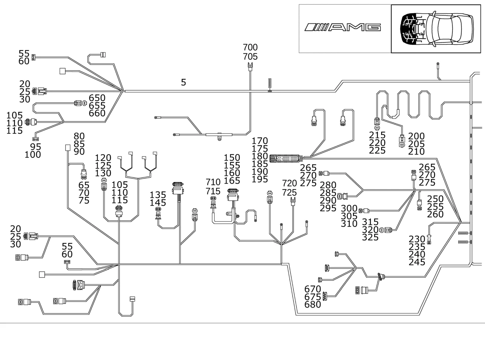

| № | Артикул | Название | Кол. | Примечание | Ограничение |
|---|---|---|---|---|---|
| 5 | A 170 540 74 06 | ЖГУТ ЭЛ.-ПРОВОДКИ | 1 | МОТОРНЫЙ ОТСЕК Рулевое управление: Влево | M112+494+-M001 |
| 5 | A 170 540 78 08 | Жгут электропроводки | 1 | МОТОРНЫЙ ОТСЕК Рулевое управление: Влево [001409] ДО ИДЕНТ. № F298214, КОД ДЕТАЛИ ЗАКАЗЫВАТЬ БЕЗ РАСШИРЕНИЯ ES1 [001410] НАЧИНАЯ С ИДЕНТ. НОМЕРА F298215, ЗАКАЗЫВАТЬ № ДЕТАЛИ С ES1 98 | M112+494+-M001 |
| 5 | A 170 540 84 06 | Жгут электропроводки (LEITUNGSSATZ) | 1 | МОТОРНЫЙ ОТСЕК Рулевое управление: Влево [402] БОЛЬШЕ НЕ ПОСТАВЛЯЕТСЯ | M112+423+494+-M001 |
| 5 | A 170 540 79 08 | Жгут электропроводки | 1 | МОТОРНЫЙ ОТСЕК Рулевое управление: Влево [001409] ДО ИДЕНТ. № F298214, КОД ДЕТАЛИ ЗАКАЗЫВАТЬ БЕЗ РАСШИРЕНИЯ ES1 [001410] НАЧИНАЯ С ИДЕНТ. НОМЕРА F298215, ЗАКАЗЫВАТЬ № ДЕТАЛИ С ES1 98 | M112+423+494+-M001 |
| 20 | A 168 545 05 28 | - Штекер (STECKER) | 1 | БЛОК\-ФАРА СЛЕВА; 4 PIN | |
| 20 | A 168 545 05 28 | - Штекер (STECKER) | 1 | БЛОК\-ФАРА СПРАВА; 4 PIN | |
| 25 | A 000 540 56 15 | - Уплотнитель проводов (ADERBUENDELABDICHTUNG) | NB | 1.2\-2.1mm JPT AMP\-MCP TE1.5 AMP | |
| 30 | A 000 540 27 05 | - Электрический провод (ELEKTRISCHE LEITUNG) | NB | 0.5\-1.00 MM2 JPT [T774] СОЕДИНИТЕЛИ СЛЕДУЕТ ЗАКАЗЫВАТЬ В СООТВЕТСТВИИ С ОБЩИМ ПОПЕРЕЧНЫМ СЕЧЕНИЕМ СОЕДИНЯЕМЫХ ПРОВОДОВРУКОВОДСТВО ПО РЕМОНТУ СМ. WIS. ================================================================================================= SOLDER CONNECTOR SLEEVES: TOTAL WIRE CROSS-SECTION: A 001 546 99 41 GREEN 0.7 - 2.4 MM2 A 002 546 00 41 RED 2.0 - 4.0 MM2 A 002 546 01 41 BLUE 3.5 - 8.0 MM2 A 002 546 11 41 YELLOW 7.5 - 12.0 MM2 BUTT JOINT: A 002 546 13 41 0.5 MM2 A 002 546 14 41 0.8 MM2 A 002 546 15 41 1.3 MM2 A 002 546 16 41 2.0 MM2 =================================================================================================== | |
| 35 | A 015 545 49 28 | - КОРПУС ШТЕК. ГНЕЗДА | 2 | УКАЗАТЕЛЬ ПОВОРОТА И МАРКИРОВОЧНЫЙ ФОНАРЬ СЛЕВА; 4\-PIN | |
| 40 | A 009 545 21 28 | - Крышка (DECKEL) | 2 | УКАЗАТЕЛЬ ПОВОРОТА И МАРКИРОВОЧНЫЙ ФОНАРЬ СЛЕВА | |
| 45 | A 003 545 26 26 | - Контактная втулка (KONTAKTBUCHSE) | NB | 0.35\-4.0 MM2 RK4 | |
| 50 | A 000 991 00 86 | - ШТИФТ ЗАКРЫВАНИЯ | NB | ||
| 65 | A 005 545 66 26 | - Корпус штекерной втулки (STECKHUELSENGEHAEUSE) | 1 | ДАТЧИК ДАВЛЕНИЯ ОЖ; 3\-PIN JPT | |
| 70 | A 000 545 72 80 | - Уплотнитель проводов (ADERBUENDELABDICHTUNG) | NB | 1.2\-2.0 MM MINI MIC | |
| 75 | A 000 540 27 05 | - Электрический провод (ELEKTRISCHE LEITUNG) | NB | 0.5\-1.00 MM2 JPT [T774] СОЕДИНИТЕЛИ СЛЕДУЕТ ЗАКАЗЫВАТЬ В СООТВЕТСТВИИ С ОБЩИМ ПОПЕРЕЧНЫМ СЕЧЕНИЕМ СОЕДИНЯЕМЫХ ПРОВОДОВРУКОВОДСТВО ПО РЕМОНТУ СМ. WIS. ================================================================================================= SOLDER CONNECTOR SLEEVES: TOTAL WIRE CROSS-SECTION: A 001 546 99 41 GREEN 0.7 - 2.4 MM2 A 002 546 00 41 RED 2.0 - 4.0 MM2 A 002 546 01 41 BLUE 3.5 - 8.0 MM2 A 002 546 11 41 YELLOW 7.5 - 12.0 MM2 BUTT JOINT: A 002 546 13 41 0.5 MM2 A 002 546 14 41 0.8 MM2 A 002 546 15 41 1.3 MM2 A 002 546 16 41 2.0 MM2 =================================================================================================== | |
| 80 | A 008 545 08 28 | - Корпус штекерной втулки | 1 | ВЫКЛЮЧАТЕЛЬ СИСТ. КОНТРОЛЯ УРОВНЯ ОХЛАЖД.ЖИДКОСТИ; 2\-PIN RK4 | |
| 85 | A 008 545 11 28 | - Крышка | NB | TO A 008 545 08 28; 2\-PIN RK4. | |
| 90 | A 001 545 44 26 | - Контактная втулка (KONTAKTBUCHSE) | NB | 0.35\-6.0 MM2 RK4.0 | |
| 95 | A 012 545 04 28 | - Разъем, электрический (ELEKTRISCHE KUPPLUNG) | 1 | ЦИРКУЛЯЦИОННЫЙ НАСОС; 2\-PIN RK4 | |
| 95 | A 008 545 08 28 | - Корпус штекерной втулки | 1 | ЦИРКУЛЯЦИОННЫЙ НАСОС; 2\-PIN RK4 | |
| 100 | A 003 545 26 26 | - Контактная втулка (KONTAKTBUCHSE) | NB | 0.35\-4.0 MM2 RK4 | |
| 105 | A 036 545 59 28 | - Сцепление, механическое (KUPPLUNG, MECHANISCH) | 1 | БЛОК\-ФАРА СПРАВА; 2\-PIN SLK 2.8 | |
| 105 | A 036 545 59 28 | - Сцепление, механическое (KUPPLUNG, MECHANISCH) | 1 | БЛОК\-ФАРА СЛЕВА; 2\-PIN SLK 2.8 | |
| 110 | A 000 545 71 80 | - Уплотнительная прокладка (DICHTBEILAGE) | NB | СИНИЙ; 1.1\-2.1 MM SLK2.8 | |
| 110 | A 000 545 76 80 | - Уплотнение (DICHTUNG) | NB | КРАСНЫЙ; 2.2\-3.0 MM SLK2.8 | |
| 115 | A 000 540 38 05 | - Электрический провод (ELEKTRISCHE LEITUNG) | NB | 0.75 MM2 SLK2.8 [T774] СОЕДИНИТЕЛИ СЛЕДУЕТ ЗАКАЗЫВАТЬ В СООТВЕТСТВИИ С ОБЩИМ ПОПЕРЕЧНЫМ СЕЧЕНИЕМ СОЕДИНЯЕМЫХ ПРОВОДОВРУКОВОДСТВО ПО РЕМОНТУ СМ. WIS. ================================================================================================= SOLDER CONNECTOR SLEEVES: TOTAL WIRE CROSS-SECTION: A 001 546 99 41 GREEN 0.7 - 2.4 MM2 A 002 546 00 41 RED 2.0 - 4.0 MM2 A 002 546 01 41 BLUE 3.5 - 8.0 MM2 A 002 546 11 41 YELLOW 7.5 - 12.0 MM2 BUTT JOINT: A 002 546 13 41 0.5 MM2 A 002 546 14 41 0.8 MM2 A 002 546 15 41 1.3 MM2 A 002 546 16 41 2.0 MM2 =================================================================================================== | |
| 120 | A 210 540 20 81 | - Корпус штекерной втулки (STECKHUELSENGEHAEUSE) | 1 | ДАТЧИК ТЕМПЕР. ИНДИКАТОРА НАРУЖ. ТЕМПЕР.; 2\-PIN MQS | |
| 125 | A 000 545 68 80 | - Уплотнение (DICHTUNG) | NB | 0.9\-1.4 MM GELB | |
| 130 | A 000 540 24 05 | - Электрический провод (ELEKTRISCHE LEITUNG) | NB | 0.75 MM2 MQS [T774] СОЕДИНИТЕЛИ СЛЕДУЕТ ЗАКАЗЫВАТЬ В СООТВЕТСТВИИ С ОБЩИМ ПОПЕРЕЧНЫМ СЕЧЕНИЕМ СОЕДИНЯЕМЫХ ПРОВОДОВРУКОВОДСТВО ПО РЕМОНТУ СМ. WIS. ================================================================================================= SOLDER CONNECTOR SLEEVES: TOTAL WIRE CROSS-SECTION: A 001 546 99 41 GREEN 0.7 - 2.4 MM2 A 002 546 00 41 RED 2.0 - 4.0 MM2 A 002 546 01 41 BLUE 3.5 - 8.0 MM2 A 002 546 11 41 YELLOW 7.5 - 12.0 MM2 BUTT JOINT: A 002 546 13 41 0.5 MM2 A 002 546 14 41 0.8 MM2 A 002 546 15 41 1.3 MM2 A 002 546 16 41 2.0 MM2 =================================================================================================== | |
| 135 | A 031 545 55 28 | - Корпус штекера (STECKERGEHAEUSE) | 1 | РАЗЪЕМ ВСАСЫВ. ВЕНТИЛЯТОРА; 2\-PIN LSK8 | |
| 145 | A 013 545 87 26 | - КОНТАКТНАЯ ВСТАВКА | NB | 8.0 \- 12.0 MM2; 8.0\-12.0 MM2 LSK8 | |
| 150 | A 034 545 93 28 | - Штекер (STECKER) | 1 | БУ ЭЛ. ВСАСЫВАЮЩ. ВЕНТИЛЯТ. ДВИГ. / КЛИМ. УСТАНОВКИ; 7\-PIN | M112 |
| 155 | A 000 540 56 15 | - Уплотнитель проводов (ADERBUENDELABDICHTUNG) | NB | 1.2\-2.1mm JPT AMP\-MCP TE1.5 AMP | M112 |
| 160 | A 013 545 87 26 | - КОНТАКТНАЯ ВСТАВКА | NB | 8,0 \- 12,0 MM2; 8.0\-12.0 MM2 LSK8 | M112 |
| 165 | A 000 540 27 05 | - Электрический провод (ELEKTRISCHE LEITUNG) | NB | 0.5\-1.00 MM2 JPT [T774] СОЕДИНИТЕЛИ СЛЕДУЕТ ЗАКАЗЫВАТЬ В СООТВЕТСТВИИ С ОБЩИМ ПОПЕРЕЧНЫМ СЕЧЕНИЕМ СОЕДИНЯЕМЫХ ПРОВОДОВРУКОВОДСТВО ПО РЕМОНТУ СМ. WIS. ================================================================================================= SOLDER CONNECTOR SLEEVES: TOTAL WIRE CROSS-SECTION: A 001 546 99 41 GREEN 0.7 - 2.4 MM2 A 002 546 00 41 RED 2.0 - 4.0 MM2 A 002 546 01 41 BLUE 3.5 - 8.0 MM2 A 002 546 11 41 YELLOW 7.5 - 12.0 MM2 BUTT JOINT: A 002 546 13 41 0.5 MM2 A 002 546 14 41 0.8 MM2 A 002 546 15 41 1.3 MM2 A 002 546 16 41 2.0 MM2 =================================================================================================== | M112 |
| 170 | A 170 545 07 28 | - Штекер (STECKER) | 1 | БУ СИСТЕМЫ ТЯГИ | |
| 175 | A 000 545 68 80 | - Уплотнение (DICHTUNG) | NB | 0.9\-1.4 MM GELB | |
| 175 | A 000 545 69 80 | - Уплотнение (DICHTUNG) | NB | 1.4\-1.9 MM MQS/MCP1.2 | |
| 180 | A 000 545 87 80 | - Заглушка (BLINDSTOPFEN) | NB | 4.1MM MQS/MCP1.2 | |
| 185 | A 000 545 73 80 | - Уплотнитель проводов (ADERBUENDELABDICHTUNG) | NB | 2.1 \- 2.9 MM2; 2.1\-2.9 MM MINI MIC | |
| 185 | A 094 545 03 00 | - Уплотнение (DICHTUNG) | NB | 3.4 \- 4.3 MM2; 3.6\-4.3 MM SPT | |
| 190 | A 000 540 24 05 | - Электрический провод (ELEKTRISCHE LEITUNG) | NB | 0.75 MM2 MQS [T774] СОЕДИНИТЕЛИ СЛЕДУЕТ ЗАКАЗЫВАТЬ В СООТВЕТСТВИИ С ОБЩИМ ПОПЕРЕЧНЫМ СЕЧЕНИЕМ СОЕДИНЯЕМЫХ ПРОВОДОВРУКОВОДСТВО ПО РЕМОНТУ СМ. WIS. ================================================================================================= SOLDER CONNECTOR SLEEVES: TOTAL WIRE CROSS-SECTION: A 001 546 99 41 GREEN 0.7 - 2.4 MM2 A 002 546 00 41 RED 2.0 - 4.0 MM2 A 002 546 01 41 BLUE 3.5 - 8.0 MM2 A 002 546 11 41 YELLOW 7.5 - 12.0 MM2 BUTT JOINT: A 002 546 13 41 0.5 MM2 A 002 546 14 41 0.8 MM2 A 002 546 15 41 1.3 MM2 A 002 546 16 41 2.0 MM2 =================================================================================================== | |
| 195 | A 013 545 53 26 | - Кабельный наконечник | NB | 1.5\-2.5 MM2 | |
| 195 | A 013 545 52 26 | - Контактная втулка | NB | 4,0 MM2 | |
| 195 | A 000 540 31 05 | - Электрический провод (ELEKTRISCHE LEITUNG) | NB | 4.0 MM2 MCP2.8 | |
| 200 | A 033 545 02 28 | - Корпус штекерной втулки (STECKHUELSENGEHAEUSE) | 1 | НАСОС ОМЫВАТЕЛЯ; 2\-PIN JPT | |
| 205 | A 000 540 27 05 | - Электрический провод (ELEKTRISCHE LEITUNG) | NB | 0.5\-1.00 MM2 JPT [T774] СОЕДИНИТЕЛИ СЛЕДУЕТ ЗАКАЗЫВАТЬ В СООТВЕТСТВИИ С ОБЩИМ ПОПЕРЕЧНЫМ СЕЧЕНИЕМ СОЕДИНЯЕМЫХ ПРОВОДОВРУКОВОДСТВО ПО РЕМОНТУ СМ. WIS. ================================================================================================= SOLDER CONNECTOR SLEEVES: TOTAL WIRE CROSS-SECTION: A 001 546 99 41 GREEN 0.7 - 2.4 MM2 A 002 546 00 41 RED 2.0 - 4.0 MM2 A 002 546 01 41 BLUE 3.5 - 8.0 MM2 A 002 546 11 41 YELLOW 7.5 - 12.0 MM2 BUTT JOINT: A 002 546 13 41 0.5 MM2 A 002 546 14 41 0.8 MM2 A 002 546 15 41 1.3 MM2 A 002 546 16 41 2.0 MM2 =================================================================================================== | |
| 210 | A 000 540 56 15 | - Уплотнитель проводов (ADERBUENDELABDICHTUNG) | NB | 1.2\-2.1mm JPT AMP\-MCP TE1.5 AMP | |
| 215 | A 210 540 20 81 | - Корпус штекерной втулки (STECKHUELSENGEHAEUSE) | 1 | ВЫКЛЮЧАТЕЛЬ СИСТ.КОНТР. УРОВНЯ ЖИДКОСТИ ОМЫВАТЕЛЯ; 2\-PIN MQS | |
| 220 | A 000 545 68 80 | - Уплотнение (DICHTUNG) | NB | 0.9\-1.4 MM GELB | |
| 225 | A 000 540 24 05 | - Электрический провод (ELEKTRISCHE LEITUNG) | NB | 0.75 MM2 MQS [T774] СОЕДИНИТЕЛИ СЛЕДУЕТ ЗАКАЗЫВАТЬ В СООТВЕТСТВИИ С ОБЩИМ ПОПЕРЕЧНЫМ СЕЧЕНИЕМ СОЕДИНЯЕМЫХ ПРОВОДОВРУКОВОДСТВО ПО РЕМОНТУ СМ. WIS. ================================================================================================= SOLDER CONNECTOR SLEEVES: TOTAL WIRE CROSS-SECTION: A 001 546 99 41 GREEN 0.7 - 2.4 MM2 A 002 546 00 41 RED 2.0 - 4.0 MM2 A 002 546 01 41 BLUE 3.5 - 8.0 MM2 A 002 546 11 41 YELLOW 7.5 - 12.0 MM2 BUTT JOINT: A 002 546 13 41 0.5 MM2 A 002 546 14 41 0.8 MM2 A 002 546 15 41 1.3 MM2 A 002 546 16 41 2.0 MM2 =================================================================================================== | |
| 230 | A 031 545 06 28 | - Корпус штекера (STECKERGEHAEUSE) | 1 | РАЗЪЕМ РАСПРЕДЕЛИТ. ПЕРЕДН. МОСТА СЛЕВА; 4\-PIN MQS | |
| 230 | A 031 545 06 28 | - Корпус штекера (STECKERGEHAEUSE) | 1 | РАЗЪЕМ РАСПРЕДЕЛИТ. ПЕРЕДН. МОСТА СПРАВА; 4\-PIN MQS | |
| 235 | A 001 545 69 40 | - Корпус штекера (STECKERGEHAEUSE) | 1 | TO A 031 545 06 28; 4\-PIN MQS | |
| 240 | A 000 545 68 80 | - Уплотнение (DICHTUNG) | NB | 0.9\-1.4 MM GELB | |
| 245 | A 000 540 24 05 | - Электрический провод (ELEKTRISCHE LEITUNG) | NB | 0.75 MM2 MQS [T774] СОЕДИНИТЕЛИ СЛЕДУЕТ ЗАКАЗЫВАТЬ В СООТВЕТСТВИИ С ОБЩИМ ПОПЕРЕЧНЫМ СЕЧЕНИЕМ СОЕДИНЯЕМЫХ ПРОВОДОВРУКОВОДСТВО ПО РЕМОНТУ СМ. WIS. ================================================================================================= SOLDER CONNECTOR SLEEVES: TOTAL WIRE CROSS-SECTION: A 001 546 99 41 GREEN 0.7 - 2.4 MM2 A 002 546 00 41 RED 2.0 - 4.0 MM2 A 002 546 01 41 BLUE 3.5 - 8.0 MM2 A 002 546 11 41 YELLOW 7.5 - 12.0 MM2 BUTT JOINT: A 002 546 13 41 0.5 MM2 A 002 546 14 41 0.8 MM2 A 002 546 15 41 1.3 MM2 A 002 546 16 41 2.0 MM2 =================================================================================================== | |
| 250 | A 005 545 54 26 | - Корпус штекерной втулки (STECKHUELSENGEHAEUSE) | 1 | ЗАПОРНЫЙ КЛАПАН УГОЛЬНОГО ФИЛЬТРА | |
| 255 | A 000 540 56 15 | - Уплотнитель проводов (ADERBUENDELABDICHTUNG) | NB | 1.2\-2.1mm JPT AMP\-MCP TE1.5 AMP | |
| 260 | A 000 540 27 05 | - Электрический провод (ELEKTRISCHE LEITUNG) | NB | 0.5\-1.00 MM2 JPT [T774] СОЕДИНИТЕЛИ СЛЕДУЕТ ЗАКАЗЫВАТЬ В СООТВЕТСТВИИ С ОБЩИМ ПОПЕРЕЧНЫМ СЕЧЕНИЕМ СОЕДИНЯЕМЫХ ПРОВОДОВРУКОВОДСТВО ПО РЕМОНТУ СМ. WIS. ================================================================================================= SOLDER CONNECTOR SLEEVES: TOTAL WIRE CROSS-SECTION: A 001 546 99 41 GREEN 0.7 - 2.4 MM2 A 002 546 00 41 RED 2.0 - 4.0 MM2 A 002 546 01 41 BLUE 3.5 - 8.0 MM2 A 002 546 11 41 YELLOW 7.5 - 12.0 MM2 BUTT JOINT: A 002 546 13 41 0.5 MM2 A 002 546 14 41 0.8 MM2 A 002 546 15 41 1.3 MM2 A 002 546 16 41 2.0 MM2 =================================================================================================== | |
| 265 | A 220 540 06 81 | - Корпус штекерной втулки (STECKHUELSENGEHAEUSE) | 1 | ДАТЧИК ДАВЛЕН. 1 ESP; 3\-PIN MQS | |
| 265 | A 220 540 06 81 | - Корпус штекерной втулки (STECKHUELSENGEHAEUSE) | 1 | ДАТЧИК ДАВЛЕН. 2 ESP; 3\-PIN MQS | |
| 270 | A 000 545 68 80 | - Уплотнение (DICHTUNG) | NB | 0.9\-1.4 MM GELB | |
| 275 | A 000 540 24 05 | - Электрический провод (ELEKTRISCHE LEITUNG) | NB | 0.75 MM2 MQS [T774] СОЕДИНИТЕЛИ СЛЕДУЕТ ЗАКАЗЫВАТЬ В СООТВЕТСТВИИ С ОБЩИМ ПОПЕРЕЧНЫМ СЕЧЕНИЕМ СОЕДИНЯЕМЫХ ПРОВОДОВРУКОВОДСТВО ПО РЕМОНТУ СМ. WIS. ================================================================================================= SOLDER CONNECTOR SLEEVES: TOTAL WIRE CROSS-SECTION: A 001 546 99 41 GREEN 0.7 - 2.4 MM2 A 002 546 00 41 RED 2.0 - 4.0 MM2 A 002 546 01 41 BLUE 3.5 - 8.0 MM2 A 002 546 11 41 YELLOW 7.5 - 12.0 MM2 BUTT JOINT: A 002 546 13 41 0.5 MM2 A 002 546 14 41 0.8 MM2 A 002 546 15 41 1.3 MM2 A 002 546 16 41 2.0 MM2 =================================================================================================== | |
| 280 | A 220 540 00 81 | - Сцепление, механическое (KUPPLUNG, MECHANISCH) | 1 | УСИЛИТЕЛЬ ТОРМОЗОВ BAS; 6\-PIN MQS | |
| 285 | A 000 540 24 05 | - Электрический провод (ELEKTRISCHE LEITUNG) | NB | 0.75 MM2 MQS [T774] СОЕДИНИТЕЛИ СЛЕДУЕТ ЗАКАЗЫВАТЬ В СООТВЕТСТВИИ С ОБЩИМ ПОПЕРЕЧНЫМ СЕЧЕНИЕМ СОЕДИНЯЕМЫХ ПРОВОДОВРУКОВОДСТВО ПО РЕМОНТУ СМ. WIS. ================================================================================================= SOLDER CONNECTOR SLEEVES: TOTAL WIRE CROSS-SECTION: A 001 546 99 41 GREEN 0.7 - 2.4 MM2 A 002 546 00 41 RED 2.0 - 4.0 MM2 A 002 546 01 41 BLUE 3.5 - 8.0 MM2 A 002 546 11 41 YELLOW 7.5 - 12.0 MM2 BUTT JOINT: A 002 546 13 41 0.5 MM2 A 002 546 14 41 0.8 MM2 A 002 546 15 41 1.3 MM2 A 002 546 16 41 2.0 MM2 =================================================================================================== | |
| 290 | A 000 545 68 80 | - Уплотнение (DICHTUNG) | NB | 0.9\-1.4 MM GELB | |
| 295 | A 000 545 87 80 | - Заглушка (BLINDSTOPFEN) | NB | 4.1MM MQS/MCP1.2 | |
| 300 | A 210 540 21 81 | - Сцепление, механическое (KUPPLUNG, MECHANISCH) | 1 | УСИЛИТЕЛЬ ТОРМОЗОВ BAS; 3\-PIN MQS | |
| 305 | A 000 540 24 05 | - Электрический провод (ELEKTRISCHE LEITUNG) | NB | 0.75 MM2 MQS [T774] СОЕДИНИТЕЛИ СЛЕДУЕТ ЗАКАЗЫВАТЬ В СООТВЕТСТВИИ С ОБЩИМ ПОПЕРЕЧНЫМ СЕЧЕНИЕМ СОЕДИНЯЕМЫХ ПРОВОДОВРУКОВОДСТВО ПО РЕМОНТУ СМ. WIS. ================================================================================================= SOLDER CONNECTOR SLEEVES: TOTAL WIRE CROSS-SECTION: A 001 546 99 41 GREEN 0.7 - 2.4 MM2 A 002 546 00 41 RED 2.0 - 4.0 MM2 A 002 546 01 41 BLUE 3.5 - 8.0 MM2 A 002 546 11 41 YELLOW 7.5 - 12.0 MM2 BUTT JOINT: A 002 546 13 41 0.5 MM2 A 002 546 14 41 0.8 MM2 A 002 546 15 41 1.3 MM2 A 002 546 16 41 2.0 MM2 =================================================================================================== | |
| 310 | A 000 545 68 80 | - Уплотнение (DICHTUNG) | NB | 0.9\-1.4 MM GELB | |
| 315 | A 210 540 20 81 | - Корпус штекерной втулки (STECKHUELSENGEHAEUSE) | 1 | ВЫКЛЮЧАТЕЛЬ СИСТЕМЫ КОНТР. УРОВНЯ ТОРМ. ЖИДКОСТИ; 2\-PIN MQS | |
| 320 | A 000 540 24 05 | - Электрический провод (ELEKTRISCHE LEITUNG) | NB | 0.75 MM2 MQS [T774] СОЕДИНИТЕЛИ СЛЕДУЕТ ЗАКАЗЫВАТЬ В СООТВЕТСТВИИ С ОБЩИМ ПОПЕРЕЧНЫМ СЕЧЕНИЕМ СОЕДИНЯЕМЫХ ПРОВОДОВРУКОВОДСТВО ПО РЕМОНТУ СМ. WIS. ================================================================================================= SOLDER CONNECTOR SLEEVES: TOTAL WIRE CROSS-SECTION: A 001 546 99 41 GREEN 0.7 - 2.4 MM2 A 002 546 00 41 RED 2.0 - 4.0 MM2 A 002 546 01 41 BLUE 3.5 - 8.0 MM2 A 002 546 11 41 YELLOW 7.5 - 12.0 MM2 BUTT JOINT: A 002 546 13 41 0.5 MM2 A 002 546 14 41 0.8 MM2 A 002 546 15 41 1.3 MM2 A 002 546 16 41 2.0 MM2 =================================================================================================== | |
| 325 | A 000 545 68 80 | - Уплотнение (DICHTUNG) | NB | 0.9\-1.4 MM GELB | |
| 330 | A 012 545 24 28 | - Разъем, электрический (ELEKTRISCHE KUPPLUNG) | 1 | ДВОЙН.КЛАПАН; 3\-PIN [402] БОЛЬШЕ НЕ ПОСТАВЛЯЕТСЯ | |
| 335 | A 003 545 26 26 | - Контактная втулка (KONTAKTBUCHSE) | NB | 0.35\-4.0 MM2 RK4 | |
| 340 | A 012 545 86 28 | - Корпус штекерной втулки (STECKHUELSENGEHAEUSE) | 1 | ТЕРМОДАТЧИК БАЧКА СТЕКЛООМЫВ.; 2\-PIN RK2.5 | |
| 345 | A 003 545 06 26 | - Контактная втулка (KONTAKTBUCHSE) | NB | 0.35\-2.5 MM2 RK2.5 | |
| 350 | A 000 545 47 19 | - ЛАМПОВЫЙ ПАТРОН | 1 | УКАЗАТЕЛЬ СИГНАЛА ПОВОРОТА, ЛЕВЫЙ | |
| 350 | A 000 540 09 66 | - Ламповый патрон (LAMPENFASSUNG) | 1 | УКАЗАТЕЛЬ СИГНАЛА ПОВОРОТА, ЛЕВЫЙ | |
| 355 | A 000 545 80 80 | - уплотнение | 1 | ||
| 360 | A 006 545 97 26 | - КОНТАКТНАЯ ВТУЛКА | NB | ||
| 360 | A 000 540 09 66 | - Ламповый патрон (LAMPENFASSUNG) | NB | ||
| 365 | A 000 545 47 19 | - ЛАМПОВЫЙ ПАТРОН | 1 | УКАЗАТЕЛЬ СИГНАЛА ПОВОРОТА, ПРАВЫЙ | |
| 365 | A 000 540 09 66 | - Ламповый патрон (LAMPENFASSUNG) | 1 | УКАЗАТЕЛЬ СИГНАЛА ПОВОРОТА, ПРАВЫЙ | |
| 370 | A 000 545 80 80 | - уплотнение | 1 | ||
| 375 | A 006 545 97 26 | - КОНТАКТНАЯ ВТУЛКА | NB | ||
| 375 | A 000 540 09 66 | - Ламповый патрон (LAMPENFASSUNG) | NB | ||
| 380 | A 210 540 36 81 | - Сцепление, механическое (KUPPLUNG, MECHANISCH) | 1 | ДАТЧИК ПОЛОЖЕНИЯ ПЕДАЛИ; 6\-PIN MQS | |
| 385 | A 000 540 45 05 | - Электрический провод (ELEKTRISCHE LEITUNG) | NB | 0.5 MM2 MQS SN [T774] СОЕДИНИТЕЛИ СЛЕДУЕТ ЗАКАЗЫВАТЬ В СООТВЕТСТВИИ С ОБЩИМ ПОПЕРЕЧНЫМ СЕЧЕНИЕМ СОЕДИНЯЕМЫХ ПРОВОДОВРУКОВОДСТВО ПО РЕМОНТУ СМ. WIS. ================================================================================================= SOLDER CONNECTOR SLEEVES: TOTAL WIRE CROSS-SECTION: A 001 546 99 41 GREEN 0.7 - 2.4 MM2 A 002 546 00 41 RED 2.0 - 4.0 MM2 A 002 546 01 41 BLUE 3.5 - 8.0 MM2 A 002 546 11 41 YELLOW 7.5 - 12.0 MM2 BUTT JOINT: A 002 546 13 41 0.5 MM2 A 002 546 14 41 0.8 MM2 A 002 546 15 41 1.3 MM2 A 002 546 16 41 2.0 MM2 =================================================================================================== | |
| 390 | A 022 545 51 28 | - Корпус штекерной втулки (STECKHUELSENGEHAEUSE) | 1 | ВЫКЛЮЧ. KICK\-DOWN; 2\-PIN [402] БОЛЬШЕ НЕ ПОСТАВЛЯЕТСЯ | M112+-423 |
| 395 | A 003 545 06 26 | - Контактная втулка (KONTAKTBUCHSE) | NB | 0.35\-2.5 MM2 RK2.5 | M112+-423 |
| 400 | A 017 545 23 28 | - Корпус штекерной втулки (STECKHUELSENGEHAEUSE) | 1 | ВЫКЛ. ТEMPOMAT ПЕРЕМЕН.; 8\-PIN | |
| 405 | A 003 545 06 26 | - Контактная втулка (KONTAKTBUCHSE) | NB | 0.35\-2.5 MM2 RK2.5 | |
| 410 | A 210 545 14 28 | - Сцепление, механическое (KUPPLUNG, MECHANISCH) | 1 | КОМБИНАЦИЯ ПРИБОРОВ; 12\-PIN | |
| 415 | A 000 540 45 05 | - Электрический провод (ELEKTRISCHE LEITUNG) | NB | 0.5 MM2 MQS SN [T774] СОЕДИНИТЕЛИ СЛЕДУЕТ ЗАКАЗЫВАТЬ В СООТВЕТСТВИИ С ОБЩИМ ПОПЕРЕЧНЫМ СЕЧЕНИЕМ СОЕДИНЯЕМЫХ ПРОВОДОВРУКОВОДСТВО ПО РЕМОНТУ СМ. WIS. ================================================================================================= SOLDER CONNECTOR SLEEVES: TOTAL WIRE CROSS-SECTION: A 001 546 99 41 GREEN 0.7 - 2.4 MM2 A 002 546 00 41 RED 2.0 - 4.0 MM2 A 002 546 01 41 BLUE 3.5 - 8.0 MM2 A 002 546 11 41 YELLOW 7.5 - 12.0 MM2 BUTT JOINT: A 002 546 13 41 0.5 MM2 A 002 546 14 41 0.8 MM2 A 002 546 15 41 1.3 MM2 A 002 546 16 41 2.0 MM2 =================================================================================================== | |
| 420 | A 032 545 19 28 | - Корпус штекерной втулки (STECKHUELSENGEHAEUSE) | 1 | БУ ПУЛЬТА ДУ; 2\-PIN MQS | |
| 425 | A 000 540 45 05 | - Электрический провод (ELEKTRISCHE LEITUNG) | NB | 0.5 MM2 MQS SN [T774] СОЕДИНИТЕЛИ СЛЕДУЕТ ЗАКАЗЫВАТЬ В СООТВЕТСТВИИ С ОБЩИМ ПОПЕРЕЧНЫМ СЕЧЕНИЕМ СОЕДИНЯЕМЫХ ПРОВОДОВРУКОВОДСТВО ПО РЕМОНТУ СМ. WIS. ================================================================================================= SOLDER CONNECTOR SLEEVES: TOTAL WIRE CROSS-SECTION: A 001 546 99 41 GREEN 0.7 - 2.4 MM2 A 002 546 00 41 RED 2.0 - 4.0 MM2 A 002 546 01 41 BLUE 3.5 - 8.0 MM2 A 002 546 11 41 YELLOW 7.5 - 12.0 MM2 BUTT JOINT: A 002 546 13 41 0.5 MM2 A 002 546 14 41 0.8 MM2 A 002 546 15 41 1.3 MM2 A 002 546 16 41 2.0 MM2 =================================================================================================== | |
| 430 | A 210 545 57 28 | - Штекер (STECKER) | 1 | МОДУЛЬ ВКЛЮЧ. СВЕТОТЕХНИКИ; 4\-PIN | |
| 435 | A 000 540 57 05 | - Электрический жгут (ELEKTRISCHER LEITUNGSSATZ) | NB | 4.0 MM2 LSK8 AG [T774] СОЕДИНИТЕЛИ СЛЕДУЕТ ЗАКАЗЫВАТЬ В СООТВЕТСТВИИ С ОБЩИМ ПОПЕРЕЧНЫМ СЕЧЕНИЕМ СОЕДИНЯЕМЫХ ПРОВОДОВРУКОВОДСТВО ПО РЕМОНТУ СМ. WIS. ================================================================================================= SOLDER CONNECTOR SLEEVES: TOTAL WIRE CROSS-SECTION: A 001 546 99 41 GREEN 0.7 - 2.4 MM2 A 002 546 00 41 RED 2.0 - 4.0 MM2 A 002 546 01 41 BLUE 3.5 - 8.0 MM2 A 002 546 11 41 YELLOW 7.5 - 12.0 MM2 BUTT JOINT: A 002 546 13 41 0.5 MM2 A 002 546 14 41 0.8 MM2 A 002 546 15 41 1.3 MM2 A 002 546 16 41 2.0 MM2 =================================================================================================== | |
| 440 | A 210 545 56 28 | - Сцепление, механическое (KUPPLUNG, MECHANISCH) | 1 | ПОВОРОТН. ВЫКЛ. СВЕТОТЕХНИКИ (МОДУЛЬ); 21\-PIN | |
| 445 | A 000 545 66 83 | - Колпачок (KAPPE) | 1 | TO A 210 545 56 28 [402] БОЛЬШЕ НЕ ПОСТАВЛЯЕТСЯ | |
| 450 | A 011 545 81 26 | - Контактная пружина (FEDERSTECKER) | NB | 0.5\-1.0 MM2 JPT | |
| 450 | A 004 545 53 26 | - Контактная пружина | NB | 1.5\-2.5 MM2 JPT | |
| 455 | A 001 997 94 90 | - Кабельная стяжка (KABELBINDER) | NB | 2,5X100 MM | |
| 460 | A 035 545 33 28 | - Штекер (STECKER) | 1 | МЕСТО РАЗЪЕМА КЛ. 56B | |
| 465 | A 009 545 28 26 | - Контактная втулка (KONTAKTBUCHSE) | NB | 0.5\-1.0 MM2 RK2.5 | |
| 470 | A 029 545 19 28 | - Сцепление, механическое (KUPPLUNG, MECHANISCH) | 1 | РАЗЪЕМ МОТОРН. ОТСЕКА/ВОДИТ. МЕСТА; 8\-PIN RK2.5 | |
| 475 | A 009 545 28 26 | - Контактная втулка (KONTAKTBUCHSE) | NB | 0.5\-1.0 MM2 RK2.5 | |
| 480 | A 031 545 66 28 | - Корпус штекера (STECKERGEHAEUSE) | 1 | РАЗЪЕМ МОТОРН. ОТСЕКА/ВОДИТ. МЕСТА; 8\-PIN | |
| 485 | A 031 545 67 28 | - Корпус штекера (STECKERGEHAEUSE) | 1 | РАЗЪЕМ МОТОРН. ОТСЕКА/ВОДИТ. МЕСТА; 8\-PIN | |
| 500 | A 027 545 76 28 | - Корпус штекерной втулки (STECKHUELSENGEHAEUSE) | 1 | РЕЛЕ МОДУЛЬ; 5\-PIN | |
| 505 | A 002 545 99 26 | - Контактная втулка (KONTAKTBUCHSE) | NB | 0.35\-2.5 MM2 RK2.5 | |
| 510 | A 027 545 72 28 | - Корпус штекерной втулки (STECKHUELSENGEHAEUSE) | 1 | МОДУЛЬ РЕЛЕ HFM; 7\-PIN | |
| 515 | A 003 545 26 26 | - Контактная втулка (KONTAKTBUCHSE) | NB | 0.35\-4.0 MM2 RK4 | |
| 525 | A 000 540 45 05 | - Электрический провод (ELEKTRISCHE LEITUNG) | NB | 0.5 MM2 MQS SN [T774] СОЕДИНИТЕЛИ СЛЕДУЕТ ЗАКАЗЫВАТЬ В СООТВЕТСТВИИ С ОБЩИМ ПОПЕРЕЧНЫМ СЕЧЕНИЕМ СОЕДИНЯЕМЫХ ПРОВОДОВРУКОВОДСТВО ПО РЕМОНТУ СМ. WIS. ================================================================================================= SOLDER CONNECTOR SLEEVES: TOTAL WIRE CROSS-SECTION: A 001 546 99 41 GREEN 0.7 - 2.4 MM2 A 002 546 00 41 RED 2.0 - 4.0 MM2 A 002 546 01 41 BLUE 3.5 - 8.0 MM2 A 002 546 11 41 YELLOW 7.5 - 12.0 MM2 BUTT JOINT: A 002 546 13 41 0.5 MM2 A 002 546 14 41 0.8 MM2 A 002 546 15 41 1.3 MM2 A 002 546 16 41 2.0 MM2 =================================================================================================== | |
| 525 | A 000 540 46 05 | - Электрический провод (ELEKTRISCHE LEITUNG) | NB | 0.75 MM2 MQS SN [T774] СОЕДИНИТЕЛИ СЛЕДУЕТ ЗАКАЗЫВАТЬ В СООТВЕТСТВИИ С ОБЩИМ ПОПЕРЕЧНЫМ СЕЧЕНИЕМ СОЕДИНЯЕМЫХ ПРОВОДОВРУКОВОДСТВО ПО РЕМОНТУ СМ. WIS. ================================================================================================= SOLDER CONNECTOR SLEEVES: TOTAL WIRE CROSS-SECTION: A 001 546 99 41 GREEN 0.7 - 2.4 MM2 A 002 546 00 41 RED 2.0 - 4.0 MM2 A 002 546 01 41 BLUE 3.5 - 8.0 MM2 A 002 546 11 41 YELLOW 7.5 - 12.0 MM2 BUTT JOINT: A 002 546 13 41 0.5 MM2 A 002 546 14 41 0.8 MM2 A 002 546 15 41 1.3 MM2 A 002 546 16 41 2.0 MM2 =================================================================================================== | |
| 530 | A 220 545 95 28 | - Штекер (STECKER) | 1 | БЛОК УПРАВЛЕНИЯ ME; 9\-PIN; JPT | |
| 535 | A 011 545 81 26 | - Контактная пружина (FEDERSTECKER) | NB | 0.5\-1.0 MM2 JPT | |
| 540 | A 031 545 72 28 | - Корпус штекерной втулки (STECKHUELSENGEHAEUSE) | 1 | ТОЧКА РАЗЪЕДИНЕНИЯ; 4\-PIN RK2.5 | |
| 545 | A 009 545 28 26 | - Контактная втулка (KONTAKTBUCHSE) | NB | 0.5\-1.0 MM2 RK2.5 | |
| 550 | A 031 545 67 28 | - Корпус штекера (STECKERGEHAEUSE) | 1 | МЕСТО РАЗЪЕМА ЗОНДА O2; 8\-PIN | |
| 555 | A 009 545 28 26 | - Контактная втулка (KONTAKTBUCHSE) | NB | 0.5\-1.0 MM2 RK2.5 | |
| 560 | A 029 545 21 28 | - Корпус штекерной втулки (STECKHUELSENGEHAEUSE) | 1 | ШТЕКЕРНОЕ СОЕДИНЕНИЕ ДВИГАТЕЛЬ/КУЗОВ/EGS; 4\-PIN RK2.5 | |
| 565 | A 009 545 28 26 | - Контактная втулка (KONTAKTBUCHSE) | NB | 0.5\-1.0 MM2 RK2.5 | |
| 570 | A 210 545 13 28 | - Корпус штекера (STECKERGEHAEUSE) | 1 | БУ ЭЛЕКТРОН. УПРАВЛ. КП (EGS); 2\-PIN JPT | |
| 575 | A 011 545 81 26 | - Контактная пружина (FEDERSTECKER) | NB | 0.5\-1.0 MM2 JPT | |
| 585 | A 000 540 45 05 | - Электрический провод (ELEKTRISCHE LEITUNG) | NB | 0.5 MM2 MQS SN [T774] СОЕДИНИТЕЛИ СЛЕДУЕТ ЗАКАЗЫВАТЬ В СООТВЕТСТВИИ С ОБЩИМ ПОПЕРЕЧНЫМ СЕЧЕНИЕМ СОЕДИНЯЕМЫХ ПРОВОДОВРУКОВОДСТВО ПО РЕМОНТУ СМ. WIS. ================================================================================================= SOLDER CONNECTOR SLEEVES: TOTAL WIRE CROSS-SECTION: A 001 546 99 41 GREEN 0.7 - 2.4 MM2 A 002 546 00 41 RED 2.0 - 4.0 MM2 A 002 546 01 41 BLUE 3.5 - 8.0 MM2 A 002 546 11 41 YELLOW 7.5 - 12.0 MM2 BUTT JOINT: A 002 546 13 41 0.5 MM2 A 002 546 14 41 0.8 MM2 A 002 546 15 41 1.3 MM2 A 002 546 16 41 2.0 MM2 =================================================================================================== | |
| 600 | A 000 540 50 05 | - Электрический провод (ELEKTRISCHE LEITUNG) | NB | 1.0 MM2 GSK1 [T774] СОЕДИНИТЕЛИ СЛЕДУЕТ ЗАКАЗЫВАТЬ В СООТВЕТСТВИИ С ОБЩИМ ПОПЕРЕЧНЫМ СЕЧЕНИЕМ СОЕДИНЯЕМЫХ ПРОВОДОВРУКОВОДСТВО ПО РЕМОНТУ СМ. WIS. ================================================================================================= SOLDER CONNECTOR SLEEVES: TOTAL WIRE CROSS-SECTION: A 001 546 99 41 GREEN 0.7 - 2.4 MM2 A 002 546 00 41 RED 2.0 - 4.0 MM2 A 002 546 01 41 BLUE 3.5 - 8.0 MM2 A 002 546 11 41 YELLOW 7.5 - 12.0 MM2 BUTT JOINT: A 002 546 13 41 0.5 MM2 A 002 546 14 41 0.8 MM2 A 002 546 15 41 1.3 MM2 A 002 546 16 41 2.0 MM2 =================================================================================================== | |
| 600 | A 000 540 51 05 | - Электрический жгут (ELEKTRISCHER LEITUNGSSATZ) | NB | 1.5 MM2 GSK1 [402] БОЛЬШЕ НЕ ПОСТАВЛЯЕТСЯ [T774] СОЕДИНИТЕЛИ СЛЕДУЕТ ЗАКАЗЫВАТЬ В СООТВЕТСТВИИ С ОБЩИМ ПОПЕРЕЧНЫМ СЕЧЕНИЕМ СОЕДИНЯЕМЫХ ПРОВОДОВРУКОВОДСТВО ПО РЕМОНТУ СМ. WIS. ================================================================================================= SOLDER CONNECTOR SLEEVES: TOTAL WIRE CROSS-SECTION: A 001 546 99 41 GREEN 0.7 - 2.4 MM2 A 002 546 00 41 RED 2.0 - 4.0 MM2 A 002 546 01 41 BLUE 3.5 - 8.0 MM2 A 002 546 11 41 YELLOW 7.5 - 12.0 MM2 BUTT JOINT: A 002 546 13 41 0.5 MM2 A 002 546 14 41 0.8 MM2 A 002 546 15 41 1.3 MM2 A 002 546 16 41 2.0 MM2 =================================================================================================== | |
| 605 | A 000 540 56 05 | - Электрический жгут (ELEKTRISCHER LEITUNGSSATZ) | NB | 6.0 MM2 GSK3 [T774] СОЕДИНИТЕЛИ СЛЕДУЕТ ЗАКАЗЫВАТЬ В СООТВЕТСТВИИ С ОБЩИМ ПОПЕРЕЧНЫМ СЕЧЕНИЕМ СОЕДИНЯЕМЫХ ПРОВОДОВРУКОВОДСТВО ПО РЕМОНТУ СМ. WIS. ================================================================================================= SOLDER CONNECTOR SLEEVES: TOTAL WIRE CROSS-SECTION: A 001 546 99 41 GREEN 0.7 - 2.4 MM2 A 002 546 00 41 RED 2.0 - 4.0 MM2 A 002 546 01 41 BLUE 3.5 - 8.0 MM2 A 002 546 11 41 YELLOW 7.5 - 12.0 MM2 BUTT JOINT: A 002 546 13 41 0.5 MM2 A 002 546 14 41 0.8 MM2 A 002 546 15 41 1.3 MM2 A 002 546 16 41 2.0 MM2 =================================================================================================== | |
| 605 | A 000 540 55 05 | - Электрический жгут (ELEKTRISCHER LEITUNGSSATZ) | NB | 2.5 MM2 GSK3 [T774] СОЕДИНИТЕЛИ СЛЕДУЕТ ЗАКАЗЫВАТЬ В СООТВЕТСТВИИ С ОБЩИМ ПОПЕРЕЧНЫМ СЕЧЕНИЕМ СОЕДИНЯЕМЫХ ПРОВОДОВРУКОВОДСТВО ПО РЕМОНТУ СМ. WIS. ================================================================================================= SOLDER CONNECTOR SLEEVES: TOTAL WIRE CROSS-SECTION: A 001 546 99 41 GREEN 0.7 - 2.4 MM2 A 002 546 00 41 RED 2.0 - 4.0 MM2 A 002 546 01 41 BLUE 3.5 - 8.0 MM2 A 002 546 11 41 YELLOW 7.5 - 12.0 MM2 BUTT JOINT: A 002 546 13 41 0.5 MM2 A 002 546 14 41 0.8 MM2 A 002 546 15 41 1.3 MM2 A 002 546 16 41 2.0 MM2 =================================================================================================== | |
| 610 | A 031 545 66 28 | - Корпус штекера (STECKERGEHAEUSE) | 1 | РАЗЪЕМ ТОПЛ.БАКА; 8\-PIN | |
| 615 | A 009 545 28 26 | - Контактная втулка (KONTAKTBUCHSE) | NB | 0.5\-1.0 MM2 RK2.5 | |
| 620 | A 029 545 25 28 | - Штекер (STECKER) | 1 | МЕСТО РАЗЪЕМА КОРОБА БУ/ДВИГ.; 8\-PIN | M112+-M001 |
| 625 | A 033 545 19 28 | - Контактный стержень (KONTAKTSTIFT) | NB | 0.5\-1.0 MM2 RK2.5 | |
| 625 | A 033 545 20 28 | - Контактный стержень (KONTAKTSTIFT) | NB | 1.1\-2.5 MM2 RK2.5 | |
| 630 | A 129 997 46 81 | - втулка (TUELLE) | 1 | 12 \- 18 MM | |
| 700 | A 008 545 08 28 | - Корпус штекерной втулки | 1 | S41; 2\-PIN RK4 | |
| 705 | A 001 545 44 26 | - Контактная втулка (KONTAKTBUCHSE) | NB | S41; 0.35\-6.0 MM2 RK4.0 | |
| 710 | A 031 545 55 28 | - Корпус штекера (STECKERGEHAEUSE) | 1 | X64/7; 2\-PIN LSK8 | |
| 715 | A 000 540 36 05 | - Электрический жгут (ELEKTRISCHER LEITUNGSSATZ) | NB | X64/7; 4.0 MM2 LSK8 AG | |
| 720 | A 008 545 08 28 | - Корпус штекерной втулки | 1 | M33; 2\-PIN RK4 | |
| 725 | A 210 540 20 81 | - Корпус штекерной втулки (STECKHUELSENGEHAEUSE) | 1 | ВЫКЛЮЧАТЕЛЬ СИСТ.ПРОТИВОУГОННОЙ СИГНАЛИЗ.В КАПОТЕ; 2\-PIN MQS | |
| 725 | A 001 545 44 26 | - Контактная втулка (KONTAKTBUCHSE) | NB | M33; 0.35\-6.0 MM2 RK4.0 | |
| 730 | A 000 540 24 05 | - Электрический провод (ELEKTRISCHE LEITUNG) | NB | 0.75 MM2 MQS [T774] СОЕДИНИТЕЛИ СЛЕДУЕТ ЗАКАЗЫВАТЬ В СООТВЕТСТВИИ С ОБЩИМ ПОПЕРЕЧНЫМ СЕЧЕНИЕМ СОЕДИНЯЕМЫХ ПРОВОДОВРУКОВОДСТВО ПО РЕМОНТУ СМ. WIS. ================================================================================================= SOLDER CONNECTOR SLEEVES: TOTAL WIRE CROSS-SECTION: A 001 546 99 41 GREEN 0.7 - 2.4 MM2 A 002 546 00 41 RED 2.0 - 4.0 MM2 A 002 546 01 41 BLUE 3.5 - 8.0 MM2 A 002 546 11 41 YELLOW 7.5 - 12.0 MM2 BUTT JOINT: A 002 546 13 41 0.5 MM2 A 002 546 14 41 0.8 MM2 A 002 546 15 41 1.3 MM2 A 002 546 16 41 2.0 MM2 =================================================================================================== | |
| 735 | A 000 545 68 80 | - Уплотнение (DICHTUNG) | NB | 0.9\-1.4 MM GELB | |
| 740 | A 027 545 78 28 | - Корпус штекерной втулки (STECKHUELSENGEHAEUSE) | 1 | СИНХР. МОДУЛЬ; 2\-PIN [402] БОЛЬШЕ НЕ ПОСТАВЛЯЕТСЯ | |
| 745 | A 002 545 99 26 | - Контактная втулка (KONTAKTBUCHSE) | NB | 0.35\-2.5 MM2 RK2.5 | |
| 750 | A 003 545 26 26 | - Контактная втулка (KONTAKTBUCHSE) | NB | 0.35\-4.0 MM2 RK4 | |
| 755 | A 027 545 70 28 | - Корпус штекерной втулки (STECKHUELSENGEHAEUSE) | 1 | СИНХР. МОДУЛЬ; 5\-PIN | |
| 760 | A 002 545 99 26 | - Контактная втулка (KONTAKTBUCHSE) | NB | 0.35\-2.5 MM2 RK2.5 | |
| 765 | A 003 545 26 26 | - Контактная втулка (KONTAKTBUCHSE) | NB | 0.35\-4.0 MM2 RK4 | |
| 770 | A 028 545 70 28 | - Корпус штекерной втулки (STECKHUELSENGEHAEUSE) | 1 | СИНХР. МОДУЛЬ | |
| 775 | A 003 545 26 26 | - Контактная втулка (KONTAKTBUCHSE) | NB | 0.35\-4.0 MM2 RK4 | |
| 780 | A 032 545 03 28 | - Штекер (STECKER) | 1 | РАЗЪЕМ EDW СПЕРЕДИ / EDW СЗАДИ; 3\-PIN | |
| 785 | A 033 545 19 28 | - Контактный стержень (KONTAKTSTIFT) | NB | 0.5\-1.0 MM2 RK2.5 | |
| 805 | A 210 540 21 81 | - Сцепление, механическое (KUPPLUNG, MECHANISCH) | 1 | СИГНАЛ ТРЕВОГИ С АКБ; 3\-PIN MQS | |
| 810 | A 000 540 24 05 | - Электрический провод (ELEKTRISCHE LEITUNG) | NB | 0.75 MM2 MQS [T774] СОЕДИНИТЕЛИ СЛЕДУЕТ ЗАКАЗЫВАТЬ В СООТВЕТСТВИИ С ОБЩИМ ПОПЕРЕЧНЫМ СЕЧЕНИЕМ СОЕДИНЯЕМЫХ ПРОВОДОВРУКОВОДСТВО ПО РЕМОНТУ СМ. WIS. ================================================================================================= SOLDER CONNECTOR SLEEVES: TOTAL WIRE CROSS-SECTION: A 001 546 99 41 GREEN 0.7 - 2.4 MM2 A 002 546 00 41 RED 2.0 - 4.0 MM2 A 002 546 01 41 BLUE 3.5 - 8.0 MM2 A 002 546 11 41 YELLOW 7.5 - 12.0 MM2 BUTT JOINT: A 002 546 13 41 0.5 MM2 A 002 546 14 41 0.8 MM2 A 002 546 15 41 1.3 MM2 A 002 546 16 41 2.0 MM2 =================================================================================================== | |
| 815 | A 000 545 68 80 | - Уплотнение (DICHTUNG) | NB | 0.9\-1.4 MM GELB | |
| 820 | A 031 545 32 28 | - Корпус штекера (STECKERGEHAEUSE) | 1 | ВЫКЛ\-ТЕЛЬ СЦЕПЛЕНИЯ; 2\-PIN JPT2.8 | -423 |
| 825 | A 011 545 81 26 | - Контактная пружина (FEDERSTECKER) | NB | 0.5\-1.0 MM2 JPT | -423 |
| 845 | A 210 545 30 28 | - Корпус штекера (STECKERGEHAEUSE) | 1 | КОМБИНАЦИЯ ПРИБОРОВ; 2\-PIN | 423 |
| 850 | A 000 540 45 05 | - Электрический провод (ELEKTRISCHE LEITUNG) | NB | 0.5 MM2 MQS SN [T774] СОЕДИНИТЕЛИ СЛЕДУЕТ ЗАКАЗЫВАТЬ В СООТВЕТСТВИИ С ОБЩИМ ПОПЕРЕЧНЫМ СЕЧЕНИЕМ СОЕДИНЯЕМЫХ ПРОВОДОВРУКОВОДСТВО ПО РЕМОНТУ СМ. WIS. ================================================================================================= SOLDER CONNECTOR SLEEVES: TOTAL WIRE CROSS-SECTION: A 001 546 99 41 GREEN 0.7 - 2.4 MM2 A 002 546 00 41 RED 2.0 - 4.0 MM2 A 002 546 01 41 BLUE 3.5 - 8.0 MM2 A 002 546 11 41 YELLOW 7.5 - 12.0 MM2 BUTT JOINT: A 002 546 13 41 0.5 MM2 A 002 546 14 41 0.8 MM2 A 002 546 15 41 1.3 MM2 A 002 546 16 41 2.0 MM2 =================================================================================================== | 423 |
| 855 | A 031 545 32 28 | - Корпус штекера (STECKERGEHAEUSE) | 1 | ВЫКЛ. ДАТЧИКА СЦЕПЛ.; 2\-PIN JPT2.8 | -423 |
| 860 | A 011 545 81 26 | - Контактная пружина (FEDERSTECKER) | NB | 0.5\-1.0 MM2 JPT | -423 |
| 870 | A 008 545 08 28 | - Корпус штекерной втулки | 1 | S41; 2\-PIN RK4 | |
| 875 | A 001 545 44 26 | - Контактная втулка (KONTAKTBUCHSE) | NB | S41; 0.35\-6.0 MM2 RK4.0 |
Позиций: 167 · подписано на схемах: 167 · колесо — плавный зум в курсор, перетаскивание — пан, двойной клик — зум, клик по артикулу — скопировать · наведите на строку или цифру на схеме — подсветка связки, клик — закрепить.